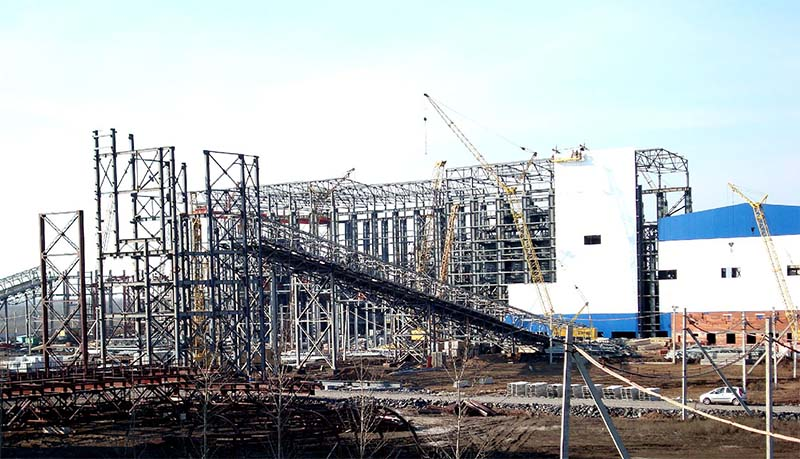

Ввод в эксплуатацию - 20 марта 2009 г.
Проектная мощность первого пускового комплекса - 7,9 млн. тонн рядового угля в год
Полная проектная мощность
- 12 млн. тонн угля в год
Численность работников - 650 человек
Средний возраст работников - 35 лет
Сегодня на «Свято-Варваринской» трудится 590 человек, средний возраст работников —
40
лет. 165 сотрудников составляют молодые рабочие и специалисты, а более 60% трудового
коллектива – женщины.
Фабрика выпускает 300-400 тысяч тонн рядового угля в месяц и дает промышленности
Украины
80% угольного концентрата марки «К».
За 10 лет работы предприятие вложило в модернизацию и развитие собственного
производства
815,3 миллиона гривен, в настоящее время оборудовано по последнему слову техники,
находясь в ритме постоянного развития и совершенствования. При разработке
технологической схемы фабрики были использованы самые современные мировые технологии
и
оборудование, отличающееся от отечественного большей эксплуатационной надежностью и
эффективностью.
Только за период с 2014 по 2019 годы на «Свято-Варваринской» на безопасность труда
работников было направлено 20 миллионов гривен.
За всю историю предприятия им было перечислено в бюджеты различных уровней 341,6
миллиона гривен.